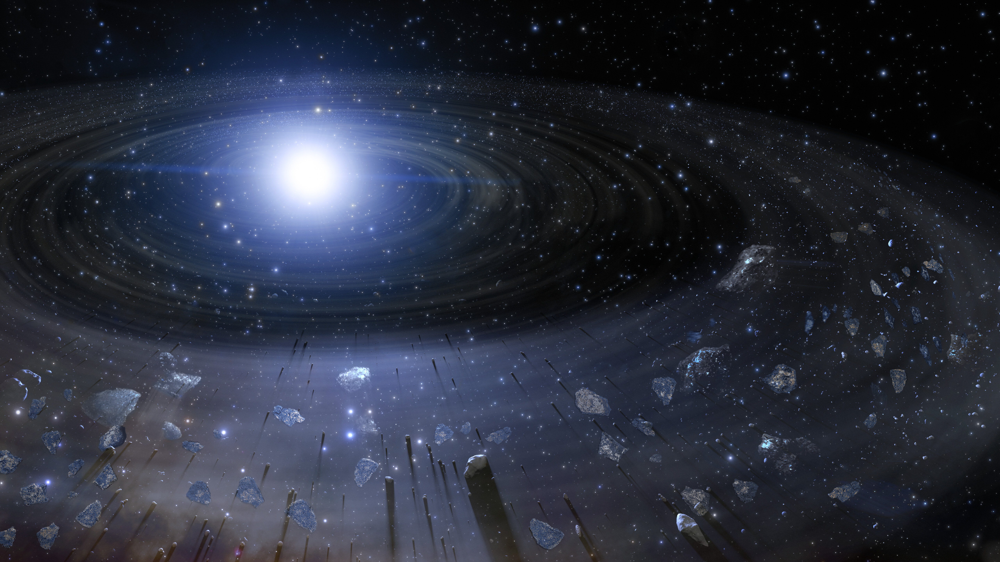
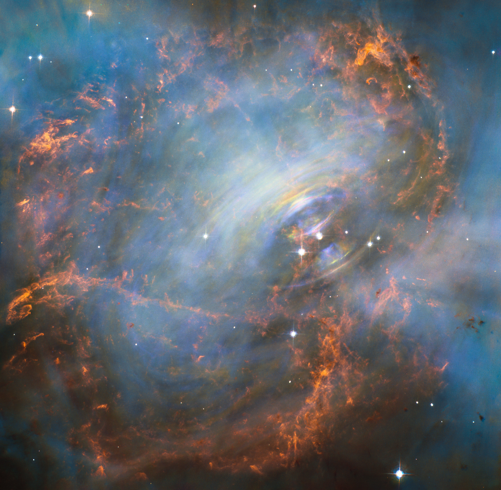

Evolution of a Star

Formation
The life of a star begins with a molecular cloud of hydrogen and helium. There are certain triggers that may cause stars to form in these clouds. The gravitational force of celestial bodies may cause parts of these clouds to increase in density. These regions will begin to attract the matter within the cloud and gradually become more dense. The star will collapse under its own gravity when the density of the region reaches a certain point. Temperature will rise and a protostar will form in the core. A disk of matter will often remain surrounding the star. These are known as protoplanetary disks.

Main Sequence
During the main sequence phase of a star’s life, it will spend its time fusing hydrogen into helium. The luminosity, temperature, and amount of nuclear fusion in the star will increase steadily throughout this period. Depending on the amount of mass a star can fuse, some stars can remain in the main sequence for trillions of years.

Red Giant
The red giant/red supergiant phase of a star’s life comes after the main sequence. During this phase, the star will fuse heavier elements like carbon. This period of a star’s life is characterized by the cooling and expansion of the outermost layers of the star. Much of the star’s mass will be released into space. As an example of this process of transition into a red giant, in about 5 billion years, the Sun will expand to a maximum radius of about 150 million kilometres, 250 times its present size, and lose 30% of its current mass.

White Dwarf
The collapse of a star begins with an increase in the pressure of radiation at the core. This pressure will become so intense that the outermost layers of the star will be blown away, leaving a small, earth-sized object called a white dwarf. Over the course of billions of years, the white dwarf will cool to the point that they no longer emit any light or heat. At this point, the star will be considered a black dwarf. But because the time required for a white dwarf to cool that much is calculated to be longer than the current age of the universe (13.77 billion years), no black dwarfs are expected to exist right now.

Supernova
Massive stars will fuse so much iron in their core that it can no longer support its own mass. At this point, the core will suddenly collapse, and cause the rest of the star to explode in a supernova. A supernova can become so bright that they outshine their entire galaxy.

Neutron Star
The core of a star that undergoes a supernova explosion becomes compressed into a very dense object that no longer generates heat, known as a neutron star.

Black Hole
The largest stars will become black holes after undergoing supernovae.